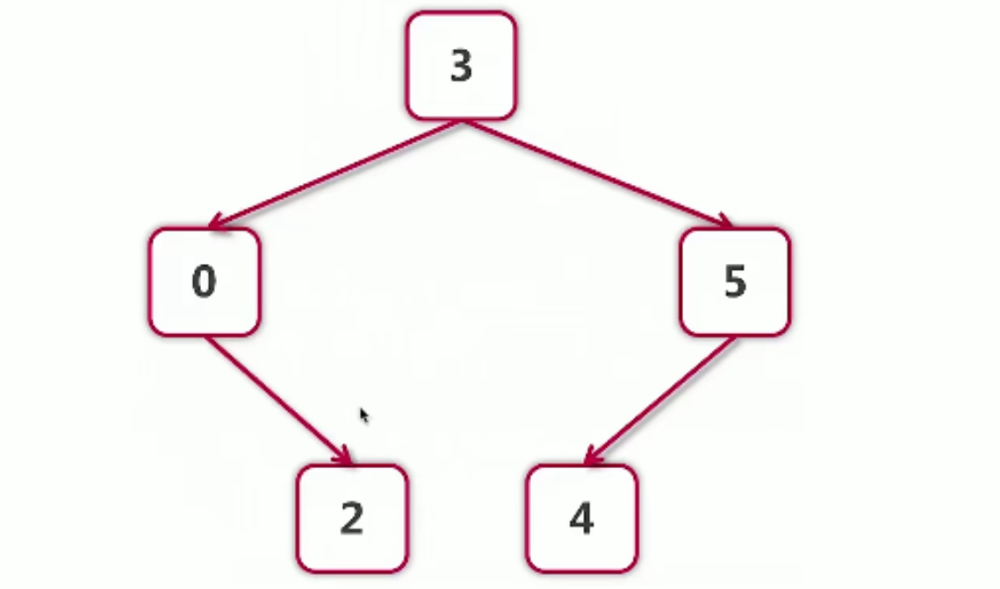

3 函数式编程
何为函数式编程？
- 参数，变量，返回值都可以是函数——>"一等公民"
- 高阶函数
- 函数->闭包
go闭包的应用：
- 不需要修饰如何访问自由变量；
- 没有Lambda表达式，但是有匿名函数。
“正统”函数式编程（数学要求高，可读性差）
- 不可变性： 不能由状态，只有常量和函数
- 函数只能有一个参数
累加器（用闭包实现）代码如下：
package main
import "fmt"
//累加器
func adder() func(int) int{
sum := 0
return func(v int) int{
sum += v
return sum
}
}
func main() {
a := adder()
for i := 0; i < 10;i++{
fmt.Println(a(i))
}
}
闭包：
函数体有局部变量，和自由变量。

“正统”的函数式编程，实例练习：
package main
import "fmt"
//累加器
func adder() func(int) int{
sum := 0
return func(v int) int{
sum += v
return sum
}
}
type iAdder func(int) (int,iAdder)
func adder2(base int) iAdder {
return func(v int)(int, iAdder){
return base + v, adder2(base + v)
}
}
func main() {
a := adder2(0)
for i := 0; i < 10; i++{
var s int
s, a = a(i)
fmt.Printf(" 0 + 1 + ... + %d = %d\n",
i, s)
}
}
python中的闭包：可以使用
__closure__来查看闭包的内容
def adder():
sum = 0
def f(value):
nolocal sum
sum += value
return sum
return f
C++中的闭包
auto adder(){
auto sum = 0;
return [=](int value) mutable{
sum += value;
return sum;
};
}
C++11以后支持闭包
java中的闭包
Function<Interger,Integer> adder(){
final Holder<Integer> sum = new Holder<>(0);
return (Integer value)->{
sum.value += value;
return sum.value;
};
}
- 1.8以后：使用Function接口和Lambda表达式来创建函数对象；
- 匿名类或Lambda表达式均支持闭包。
函数式编程案例
1.斐波那契数列
用文件
package main
import (
"bufio"
"fmt"
"io"
"strings"
)
// 1,1,2,3
// a,b
// a,b
// a,b
func fibonacci() intGen{
a, b := 0,1
return func() int {
a, b = b, a+b
return a
}
}
type intGen func() int
func (g intGen) Read(p []byte) (n int, err error) {
next := g() //取得下一个元素
if next > 10000{
return 0,io.EOF
}//上限为10000，文件读到头
s := fmt.Sprintf("%d\n",next)
return strings.NewReader(s).Read(p)
}
//打印文件
func printFileContents(reader io.Reader){
scanner := bufio.NewScanner(reader)
for scanner.Scan(){
fmt.Println(scanner.Text())
}
}
func main() {
f := fibonacci()
printFileContents(f)
}
2.使用函数遍历二叉树
有一棵树：

tree的操作：
package tree
import "fmt"
func (node * Node) Traverse(){
node.TraverseFunc(func(node *Node) {
node.Print()
})
fmt.Println()
}
func (node *Node) TraverseFunc(f func(*Node)){//定义该函数
if node == nil{
return
}
node.Left.TraverseFunc(f)
f(node)
node.Right.TraverseFunc(f)
}
主函数：
package main
import (
"fmt"
"go_module/tree"
)
type myTreeNode struct {
*tree.Node // Embedding 内嵌 语法糖可以直接让后面的节点省略一些代码
}
func (myNode *myTreeNode) postOrder(){
if myNode == nil || myNode.Node == nil{
return
}
left := myTreeNode{myNode.Left}
left.postOrder()
right := myTreeNode{myNode.Right}
right.postOrder()
myNode.Print()
}
func main() {
var root tree.Node
fmt.Println(root)
root = tree.Node{Value: 3}
root.Left = &tree.Node{}
//指针也可以用. 不用->
nodes := []tree.Node{
{Value: 3},
{},
{6,nil,&root},
}
fmt.Println(nodes)
root.Print()//方法，传值
//不需要知道结构实在堆上还是栈上，是垃圾自动回收
var pRoot *tree.Node
pRoot.SetValue(200)
pRoot = &root
pRoot.SetValue(300)
pRoot.Print()
root.Traverse()
//值接收者是go特有的
nodeCount := 0
root.TraverseFunc(func(node *tree.Node) {
nodeCount++
})
fmt.Println("Node count:",nodeCount)
}
更新: 2021-11-23 00:40:07
原文: https://www.yuque.com/xiaoshan_wgo/codingnotes/nxi0co